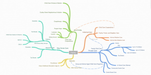

Within Massachusetts, inequality is rampant. A symptom of and contributor to that inequality is the prohibitive cost of child care which further perpetuates poor families struggling to both raise children and bring in a livable income. Furthermore, structural barriers prevent young women and mothers in poverty especially those of color, to come out of poverty. Project Hope works to alleviate these systemic challenges by providing programs that work with women to overcome these barriers. In order to best assist Project Hope in their mission, we devised a social media campaign to bring in more caregivers, students, families, and participants into their programs.
Author Archives: Maggie Hughes
{kind=link}
Reflection on Learning Goals
I hope to learn how to better engage with the community, promote trust, and collaborate in a positive way.
With repeated visits, steady communication, and deep, active listening, trust between Project Hope, the wider community, and myself seems to have grown. With repeated visits, individual interviews have gone deeper and novel ideas brought up. Concepts we’ve learned in class have helped me be more conscious of the amount of space and time I take up. In particular, by prioritizing the nonprofit and stepping back as a designer and being lead by the nonprofit is a method I’ve deeply valued.
I hope to better learn how to constructively and holistically collaborate with a community that was not mine originally without contributing to or perpetuating the white savior narrative.
Similarly to my answer above, I think Codesigning as a concept promotes authentic collaboration and design that prioritizes the community over everything else.
I hope that through much iteration and deep collaboration, we can find a system that compliments the community.
This is the learning goal I am still working towards. Project Hope is incredibly busy, and to engage in Codesign seems as if it is one more responsibility to throw on their already loaded plate. They are excited about the work and are eager, yet it seems to be burdensome, which is problematic and can halt collaboration and iteration. I am working to find a balance now to properly contribute to their work with them as leaders without unloading too much work or responsibility onto them.
Project Hope | Design Brief

Link to Design Brief: https://docs.google.com/document/d/1KKhU7yqkJVEZOt3FTZ1Ve9vx2HsBMUU42piTr8W0-5I/edit#heading=h.g7ghxkjezuo3
Link to Slide Show: https://docs.google.com/presentation/d/1PgZpOWncRB-LW6e8fKCAr6qDtF4asFEkbSkUTnf6LXE/edit#slide=id.g723630543_3_0
Massachusetts has some of the most expensive child care in the country and has some of the most vast income inequality in the United States. That coupled with limited spots in child care centers, swaths of child care deserts, strict laws around child care, and hefty fines for informal child care leaves in-state child care unaccessible and acts as a barrier for wealth accumulation.
Lower income families and single parents must either stay home, find inexpensive child care centers, or find other means for care. Mothers in the Roxbury, Dudley, Dorchester neighborhoods have explained that you “get what you give” suggesting that quality care is achieved when price is high. However, many families from these communities have found a system that provides personal quality care at the cheapest price: Family Child Care Centers.
Project Hope provides a variety of programs to assist the community, particularly women within the community. For example, they provide 11 families with shelter, the provide adult educational services, workforce development and employer partnerships, and offer a speakers bureau. They have a program dedicated to helping women with child care talents to start these Family Child Care Businesses in the Roxbury neighborhood. However, they struggle to get the community involved or to get them to take advantage of these programs unless they are already affiliated with Project Hope. Many of the mothers who came to Project Hope for assistance in times of struggle now are family child care business owners. However Project Hope feels that they have many more services to offer the entire community, not just those who are already engaged with the nonprofit. They hope to spread their services of promoting Family Child Care Businesses throughout their greater community.
Addressing Issues of Harassment, Abuse, Assault on an Organizational Level on College Campus
At Wellesley, the only formal outlet to address issues of sexual assault, harassment, or violence and to have them be recognized was through Title IX. Going through the Title IX process can be incredibly emotionally and mentally taxing, and may invalidate the reporter’s experience, especially when it involves members of the LGBTQ community. This process can be draining and painful yet still not hold the respondent accountable. Other colleges, however, have systems in place to hold individuals accountable at an organization level when the reporter wants to feel safe and comfortable in their community but not go through the Title IX process.
A person who had this experience explained this oversight to a group of organization presidents and myself. We recognized this constraint and saw that our organizations had no systems to address issues of harassment, abuse, and assault at an organization and community level along with the Title IX process or instead of going through the Title IX process. If a member of an organization was abusive, there was no way to hold them accountable without bringing in the college.
Though this is collegiate policy work, the process we went through felt similar to design justice work. We researched how other colleges’ organizations addressed these issues and spoke to Boston organizations that had experience in this domain. We then drafted our initial system and process to address these issues (along with outlining community standards at a broader level) and went through months of iteration to create the most comprehensive document that would make our communities safer. We included our respective communities in the iteration process as well.
After refining each system to work in our organization’s structure, we sent out a template for other organizations to apply a system like this and a system of community standards in their organizations if they were interested. We are now continuing to iterate with the college to create a more refined system that the college can offer to organizations that already exist or as they are created.
The first design justice principle, I believe, resonated most with this project: design to sustain, heal, and empower our communities, as well as to seek liberation from exploitative and oppressive systems. In this process, experts were not involved in the collaboration enough, which made the process inefficient and perhaps more strenuous and iterative than needed.
Maggie’s Intro
Hello!
My name is Maggie Hughes and I’m a senior at Wellesley College! I’m from Virginia where I bounced between the southeast and the northwest, and I’m now majoring in political science with a design minor.
For the past two years, I’ve UROPed with Social Machines at the Media Lab. The group “seeks to enable human-machine collaborations that enhance our ability to listen, learn and engage across communities.” This has manifested in tools such as The Electome that mapped and analyzed the conversations around the 2016 election on Twitter and looked at how they developed and changed over time. This project acted as a springboard to my thesis that maps and analyzes the Twitter users’ response to mass shootings over time by looking at how clusters of conversation form as well as the content of those conversations.
I hope to pursue community organizing and human-machine collaboration and tool building in this course and after school. I am deeply interested in creating platforms for communities to share their successes and reveal and emerge their strengths, and I hope to pursue this mission in this course!
Project
Over the summer, I lived in Roxbury and began to develop a relationship with the Dudley Street Neighborhood Initiative (DSNI) and Project Hope. DSNI’s mission is to “empower Dudley residents to organize, plan for, create and control a vibrant, diverse and high-quality neighborhood in collaboration with community partners.” We originally began working with DSNI to translate a method mothers in my community used in Virginia to Boston communities, a form of overcoming the preventative cost of childcare through networks. This happens naturally, but we wondered if technology could contribute or scale this model. However, after speaking with mothers and families from these groups, the concept has evolved radically.
The families I spoke to shifted from DSNI to Project Hope and Empath. After working and speaking with many mothers from these groups, they did not express interest in networks to overcome the preventative cost of childcare. However, they deeply cared about their community and sharing information within that community. For instance, all of the women I’ve spoken to had found solutions to many obstacles within their lives. They had been settled for some time, and they expressed interest in telling their stories and sharing their solutions with younger mothers in their community. This is the point we are at now, however I imagine that anything we produce could look radically different than what I expect, and speaking with a different age of mothers would have different results.
Learning Goals
As I explained in my diagram, I hope to engage with the community through these partners to collaboratively build tools with them with heavy iteration. Hopefully, the final product will be passive and amplify the community’s strengths rather than act as an intervention. In this course, I hope to learn how to build passive systems rather than the intervening ones.
In this course, I hope to learn how to better engage with the community, promote trust, and collaborate in a more positive way. I hope to better learn how to constructively and holistically collaborate with a community that was not mine originally without contributing to or perpetuating the white savior narrative. I hope that through much iteration and deep collaboration, we can find a system that compliments the community.